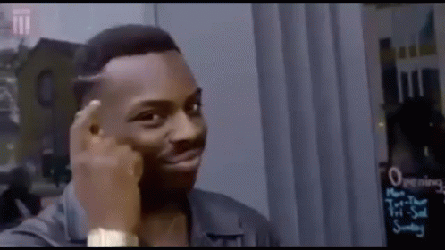
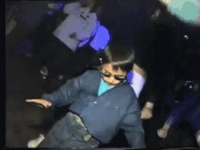
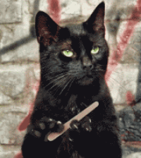
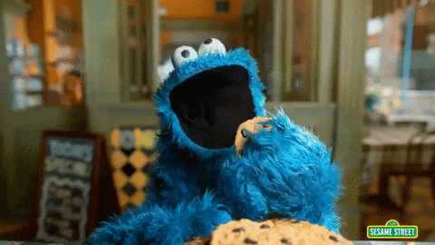

Week 1
You should add personal summary or objective for entry-level roles in your cv. I thought it was waste of space, but it adds personality to a piece of paper

Week 2
Documentation – you should walk people through it like you walk your grandma through a Facebook page. As a developer, you hate documentation but then you get hired at a company, where no one documented
Week 3
Hardware lab – I have never done it before. I enjoyed every second of this lab as I was learning something new and I was working with my classmates. Can I build my computer? NO! However, I can definitely show it off.
Week 4
Road mapping – I set new goals after year of chaos. I had to take a gap year after college, so it is hard to get back,. However, using road mapping techniques help – I can navigate where I was, where I am and where I am going.
Week 5
Well, rumors were true – tailored cv + cover letter + follow ups = job.
Week 6
Networking – one word that scared me for a couple years due to the complexity of the topic. However, learning about IP and subnet mask made me realize that it is doable. This particular topic has more words and less numbers, which is not my favorite. Nonetheless, I am surrounded by networking so learning new topics was as easy as having a sweet treat after a big meal.
Week 7
Elevator pitch – be concise about your background, present projects that reflect job description. In fact, 2 guys ( who interviewed me) recommended me to talk more about my projects and delete irrelevant jobs. Grateful for constructive criticism.

Week 8
Mock interviews – just let it be, some people are going to vibe, some are going to fail you. Research and confidence is the only answer for passing real world interviews.

Week 9
LinkedIn – don’t be shy to post about non related jobs, just be professional. No matter what you have done, you can make candy out of it. For example, I am a Software Developer, I am volunteering as an immigration assistant for Russian/Ukrainian communities in Western Mass. Does it relate to my career? No. Do I truly enjoy it? Every time.

Week 10
Take responsibility for your actions. It is so easy to blame the job market, companies' layoffs and just bad weather for your missed opportunities/time. However, you must adapt and stay positive to get the job, because you never know. Also, Server Lab was crazy.

Week 11
Do cover letters still exist? Yes? Well, I guess I am in.

Week 12
Cybersecurity – complicated but manageable. I learnt something new, I also enjoyed playing games and Kahoot! – especially, being Jacob’s Dog.

Week 13
My idea of a website about my experience in Tech Foundry was born a month ago. I was thinking what I like to do, what I can do and what would enhance my skills – make a website with memes and interactivity.
Week 14
Final touches for Capstone, more memes and debugging. I am going to bring Costco Cake for Wednesday.
